Myanmar Trav-E-Logs ©
Minority Tribe Trekking 1
| 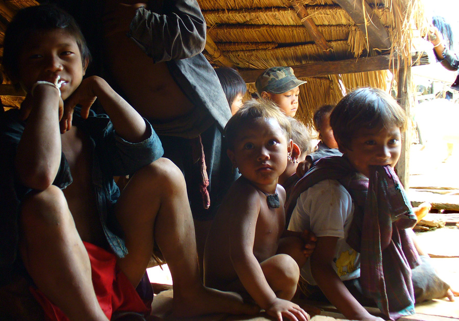 | |
| back: Keng Tung Main Market | In observance of a death in the village, the Chief and Shaman requested that no one work the fields this day. |
================================= Trekking to minority tribes is usually the highlight of travels to Keng Tung. Soon after arriving, inquires were made of seasoned travelers, and a list of excellent guides made. My list had only one name, and I was willing to wait four days for the best. Several of those days were spent on a bicycle, so never had a dull moment. =================================
Mid-June 2006
|
I will never forget my day in the villages. It started with a trip to the market to pick up food and a huge bag of cookies to give as favors to the village residents. 'Cookies?' you might ask. Well, not much else that is feasible, given items available on the local economy. My guide speaks all the languages used in this region, and was well received everywhere we went. My simple objectives for the trek were to hike in a local forest, and visit a hill tribe or two not on the tourist track. To get to these areas, a dirt bike had to rented, as there is little economic incentive to build roads to hilltribe villages. Fortunately, my guide arranged all these details. The road out of town quickly becomes rutted and muddy, and the selection of a dirt bike was immediately appreciated. The road ended at a Shan village, where my guide arranged to store the bike. Now the fun part began, as we followed a footpath up into the hills. As it was now late morning, the most interesting things seen along the path were mushrooms of every color and shape imaginable. After an hour's walk, we came to a clearing close to a village, our first destination. Off in the distance, a second village could be seen. Once introductions were made and an invitation extended, we were seated at the Shaman's house. Eventually, permission was asked to pass out the cookies. Children were first, and they orderly assembled around the perimeter of the Shaman's front porch. Each child waited for permission to approach my guide, who handed out the favors. Impatience and greed was non-existent. It was just amazing to see all these children wait so patiently, thanking properly, and retreating to enjoy the meager offering. Photos, clockwise from the top: Exceptional tour guide on the dirt bike needed to get close to the hill tribes; Path up the hill after storing our bike; Colorful mushrooms; Shaman brew; End of feast; Minority village 2 in distance; View from Shaman's Hut; Sacred Drum; Tribal homes; Minority village 1. 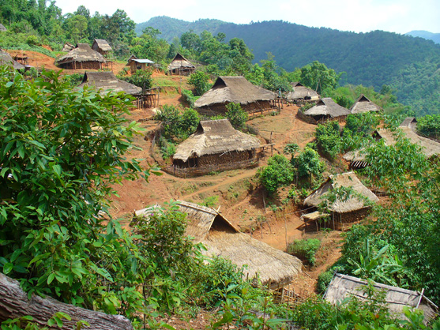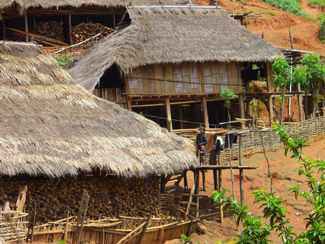 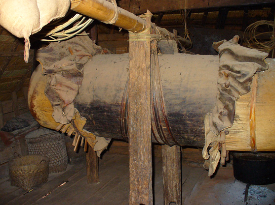 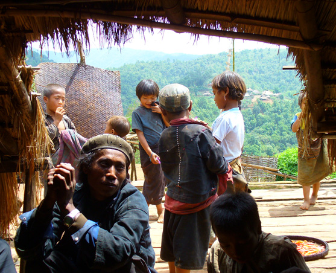 Enjoy! Bill ------------------------------ Questions? Email me at the juno.com address dancer2SEAsia. |
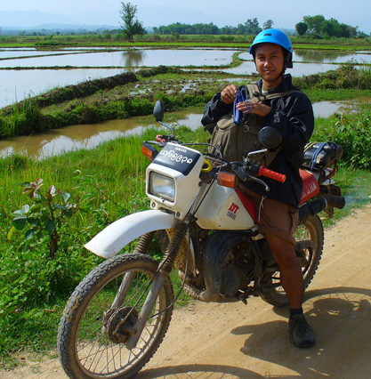 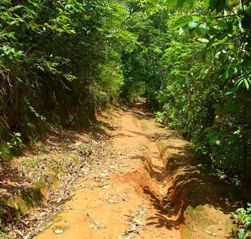 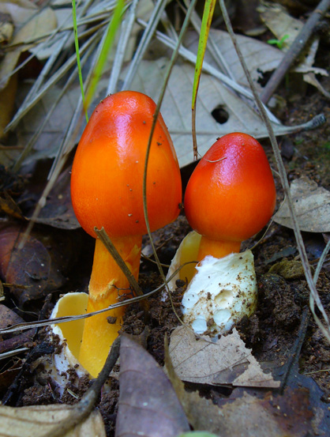 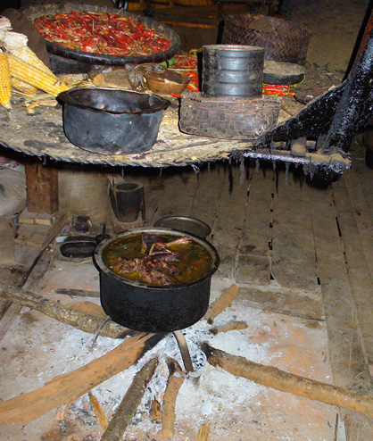 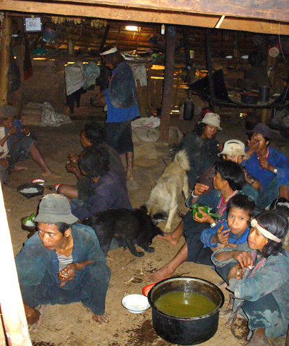 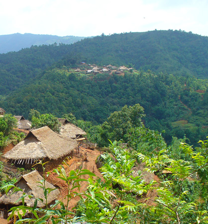 |
"Travel is like a book. Those who don't are stuck on the first page.
| jump to: Brunei Holiday | soon: Minority Tribe Trekking 2 |
| back: Keng Tung Main Market |